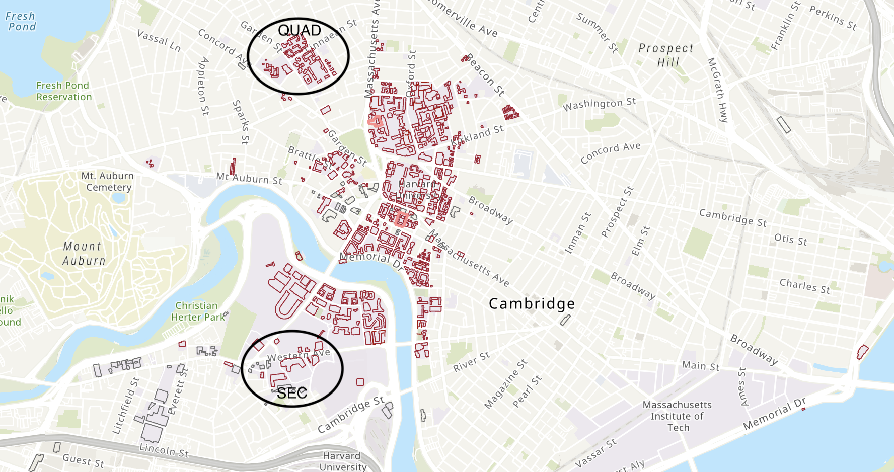

Scroll to Load
Status: Loading...
Meet Bluebikes!
Bluebikes on Harvard's campus, and you.
Region
Harvard
Data Window
2018 - 2019
Bluebikes, Boston's bikesharing program, was launched in 2011. Ten years later, there are now over 3,800 bikes deployed in ten municipalities. In our exploratory analysis, we shed light on how users interact with Bluebikes in one representative pre-pandemic year.
We present 2018-2019 data centered on Harvard, which is representative of a city environment and college campus, and spans Longwood, Allston/Harvard Business School, and Harvard Square. As you take a ride through our data story, try to understand how ridership varies across demographics, and how the greater Harvard community really interacts with the bikes that are so ubiquitous around campus.
How does Bluebikes work? Let's follow a bike.
Welcome to Cambridge! Put on your helmets, because we're about to go on a virtual ride around town. Click "next" to move from one station along the trip to another.
Click on the circular icons ( ) to view trip information. You can also select a different bike to follow!
Scroll to Load
As you can see, each trip between stations is one ride. A bike may be checked out from one station, ridden for a certain amount of time, and then returned to another station. Then, another user may borrow the bike from that station, beginning a new ride.
During your virtual ride, you may have noticed that some stations are more frequented than others.
Which stations on Harvard's campus are the most popular?
Explore the answer in the map below. Popularity is
based on total traffic or solely on departures from or arrivals to each station.
Note that the areas where circles overlap denote the areas with higher traffic, which are perfect places to add more Bluebikes capacity.
"Net Bikes," or the
difference between arrivals and departures, shows us which stations tend to gain or lose bikes.
Purple circles are net positive, while red circles are net negative.
Click a station circle to view its name and traffic information. Take a look at some of the stations and see if you can make any interesting comparisons!
Scroll to Load
From this map, most stations have roughly equal numbers of departures as arrivals.
There are few egregious imbalances of departures and arrivals, which means the flow and placement of bikes is relatively well-designed. The Bluebikes station in Central Square ("Central Square at Mass Ave / Essex St") is the most popular station by far,
with a conspicuously large radius for both Departures, Arrivals, and Total Departures and Arrivals.
This makes sense given that it is conveniently located between Harvard's and MIT's campuses.
Of all the undergraduate dorms, Mather/Dunster and the Quad are the furthest from main campus.
Do you think Quad or Mather/Dunster students make more Bluebikes trips?
Check out the red pins ( ) on the map to see.
) on the map to see.
Looking at the Garden St station near the Quad and the DeWolfe St station near Mather/Dunster, roughly 20,000 more rides were taken by Mather/Dunster students than Quad students. Interestingly, the station closest to Mather/Dunster also had the largest net arrivals of bikes compared to any other station.
Wow! There sure are a lot of stations. Let's take a closer look at which stations are the most and least highly trafficked.
Because there is little difference between departures and arrivals for a given station, we can use departures to measure the popularity of a station. Shown in the left barchart are the 5 most popular stations on Harvard's campus, each with the count of rides that depart from that station. The right barchart shows the 5 least popular stations. Hover over a bar to see the exact number of rides.
Scroll to Load
Scroll to Load
All five of the most popular stations are located at junctions. It makes sense that major transit sites tend to be junctions between busy roads.
We've seen where users bike.
But when do they do it?
How does usage vary in the course of a day, and when do most rides occur? In addition, how long do rides tend to be?
Scroll to Load
Rides from 3pm-6pm are the most common, but the longest trips occur from 12pm to 3pm.
As you may expect, not a lot of rides happen in the nighttime hours, from midnight to 6am.
However, there is a nonzero amount of nighttime riders out there enjoying the empty streets.
These rides tend to be short and sweet, compared to mid-afternoon rides.
Beyond the day-to-day, we are also interested in longer term trends in ridership.
We created a dashboard to find out the answer to this, and more.
Dashboard: explore breakdown by user demographics
As is expected, there are more rides in the summer months than in the dead of winter.
In the charts below, you can dive further into the demographics of Bluebikes users to see how bike usage varies across categories and time. You can brush on the chart to the left to zoom in on selected time frames on the charts below. Clicking out of the brush selection will reset the charts.
It is important to note that, due to privacy constrictions on the data structures, rides are not associated with specific users. Therefore, our analysis is based on rides rather than on users.
Toggle below to switch between analyzing the number of rides or the average trip duration.
Scroll to Load
Scroll to Load
Scroll to Load
How do demographic factors intersect?
Now that we've explored where Bluebikes users tend to go on Harvard's campus and when they bike, let's take a closer look at who the typical campus Bluebikes user is. Can you see which demographics you fit into?
Scroll to Load
Scroll to Load
Scroll to Load
These pie charts further break down the demographics into more detailed age groups.
From these pie charts, we see that most Bluebikes users are Males, then Females. Users with unspecified gender are likely customers who were not registered members, so their demographic information is unavailable.
We might notice that there are more male rides than female rides. However, it is important to note that this pie chart refers to the number of rides and not the number of users (because users are anonymized). As in the dashboard, this invites questions of whether this is due to a difference in the number of users by sex or the number of average rides per user by sex.
Looking at the age chart, there are a couple of insights. First, we see that the number of rides for ages 28-38 is close to or greater than the number of rides for ages 18-28. This is interesting because we are looking at rides centered around the Harvard campus.
We can infer that there is probably a low percentage of undergraduate users. These stations are centered around Harvard which combined have an undergraduate population of almost ten thousand. If we divide the number of rides by 10,000, and consider the total time frame, we see that the number of rides is quite low.
Conclusions
PIE CHART INSIGHTS for 48-58, more customers than subscribers from this data, we see that the most Bluebikes rides on Harvard’s campus are completed by subscribers, males, and adults 25+. Subscribers take on average 15 minute shorter rides. Females take slightly longer rides than males. Youth have diverse uses of Bluebikes, with a lot of variation in trip duration, though young adults and adults tend to take trips that are about 15 minutes long.
Both interest and need for sustainable and usable public transportation systems are growing. Transportation is a key part of student life, as well as city and campus planning. Walk times, shuttles, buses, trains, and bikes are all transportation systems that impact the day-to-day life of students, residents, and college administrators.
It is not our intention to give feel-good advice about bicycle exercise or present an advertisement for Bluebikes. We simply want to provide you with information to understand the services that are supposed to be serving you and your community. Information about usage across demographics, temporal and seasonal ebbs and flows which may inform the transportation habits of yourself and those around you.
To evaluate what they are and how they are being used. To whether they are suiting your needs, and the neighborhoods and campus in which you study and work and live. And to provide you with the resources to actively understand and interrogate the structures around you so that you can make informed choices about what you use or don't use, how Bluebikes might or might not fit into your life and what you might do about it. Whether that is:
- going out to buy a Bluebikes membership of your own
- getting a subsidized one through Harvard
- using more public transportation
- buying a bike
- or simply engaging with the urban environment around you.
LIST DATA VARIABLES HERE!!!! ALSO PUT AUTHORS AND BIOS Erica Wu Daniel Rodrigues Jacob Moore Lara Zeng SOURCES: Features in the New York Times include Those Bright Bluebikes, to Love and to Hate and Color Me Blue, which are both filled with vitriol and equal passion for the bikes. At a more granular level, as students who all live in the Radcliffe Quadrangle and regularly commute to Allston (for CS171), we are particularly interested in how Harvard is making the SEC more accessible. Harvard has placed non-SEAS courses, and core courses, in the SEC as an attempt to “destigmatize” this section of campus. Engineering a Unified Campus and SEAS Students Adjust to Allston Commute are news articles from this semester that detail rising concerns about transportation methods. In regard to visualizations, Bluebikes actually showcases a number of visualizations. Here is one showcase: https://storymaps.arcgis.com/stories/0f5fc6ed107d4c0491d24051eed77ff9 Data: The repository of Bluebikes usage data can be found here: https://s3.amazonaws.com/hubway-data/index.html